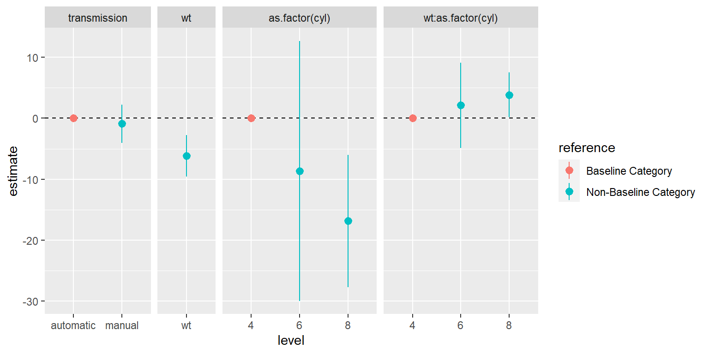

Introduction
The tidycat package includes the tidy_categorical() function to expand broom::tidy() outputs for categorical parameter estimates.
Documentation
For full documentation, see the package vignette: The tidycat package: expand broom::tidy() output for categorical parameter estimates
Hello World
The tidy() function in the broom package takes the messy output of built-in functions in R, such as lm(), and turns them into tidy data frames.
library(dplyr)
library(broom)
m1 <- mtcars %>%
mutate(transmission = recode_factor(am, `0` = "automatic", `1` = "manual")) %>%
lm(mpg ~ transmission + wt * as.factor(cyl), data = .)
tidy(m1)## # A tibble: 7 x 5
## term estimate std.error statistic p.value
## <chr> <dbl> <dbl> <dbl> <dbl>
## 1 (Intercept) 41.5 4.54 9.14 0.00000000190
## 2 transmissionmanual -0.902 1.51 -0.595 0.557
## 3 wt -6.19 1.65 -3.75 0.000937
## 4 as.factor(cyl)6 -8.66 10.4 -0.836 0.411
## 5 as.factor(cyl)8 -16.9 5.27 -3.20 0.00374
## 6 wt:as.factor(cyl)6 2.12 3.40 0.625 0.538
## 7 wt:as.factor(cyl)8 3.84 1.77 2.17 0.0399The tidy_categorical() function adds
- further columns (
variable,levelandeffect) to thebroom::tidy()output to help manage categorical variables - further rows for reference category terms and a column to indicate their location (
reference) when settinginclude_reference = TRUE(default)
It requires two inputs
- a data frame
dof parameter estimates from a model frombroom::tidy() - the corresponding model object
mpassed tobroom::tidy()
For example:
library(tidycat)
d1 <- m1 %>%
tidy(conf.int = TRUE) %>%
tidy_categorical(m = m1)
d1 %>%
select(-(3:5))## # A tibble: 10 x 8
## term estimate conf.low conf.high variable level effect reference
## <chr> <dbl> <dbl> <dbl> <chr> <fct> <chr> <chr>
## 1 (Interce~ 41.5 32.1 50.8 (Intercept) (Inte~ main Non-Baselin~
## 2 <NA> 0 0 0 transmissi~ autom~ main Baseline Ca~
## 3 transmis~ -0.902 -4.02 2.22 transmissi~ manual main Non-Baselin~
## 4 wt -6.19 -9.59 -2.79 wt wt main Non-Baselin~
## 5 <NA> 0 0 0 as.factor(~ 4 main Baseline Ca~
## 6 as.facto~ -8.66 -30.0 12.7 as.factor(~ 6 main Non-Baselin~
## 7 as.facto~ -16.9 -27.7 -6.00 as.factor(~ 8 main Non-Baselin~
## 8 <NA> 0 0 0 wt:as.fact~ 4 intera~ Baseline Ca~
## 9 wt:as.fa~ 2.12 -4.87 9.12 wt:as.fact~ 6 intera~ Non-Baselin~
## 10 wt:as.fa~ 3.84 0.192 7.50 wt:as.fact~ 8 intera~ Non-Baselin~The expanded data frame from tidy_categorical() of parameter estimates can be particularly useful for creating coefficient plots, allowing:
- grouping terms from the same categorical variable from the additional columns.
- inclusion of reference categories in a coefficient plot from the additional rows, allowing the reader to better grasp the meaning of the parameter estimates in each categorical variable.
For example:
library(forcats)
library(ggplot2)
library(ggforce)
d1 %>%
slice(-1) %>%
mutate(variable = fct_inorder(variable)) %>%
ggplot(mapping = aes(x = level, y = estimate, colour = reference,
ymin = conf.low, ymax = conf.high)) +
facet_row(facets = "variable", scales = "free_x", space = "free") +
geom_hline(yintercept = 0, linetype = "dashed") +
geom_pointrange()